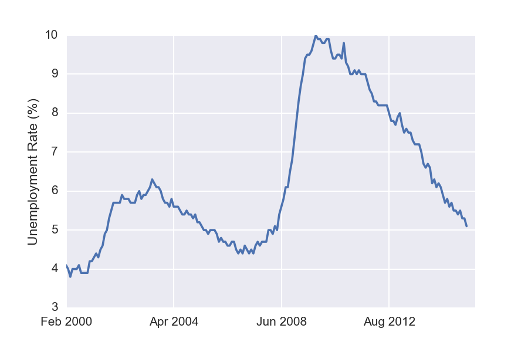
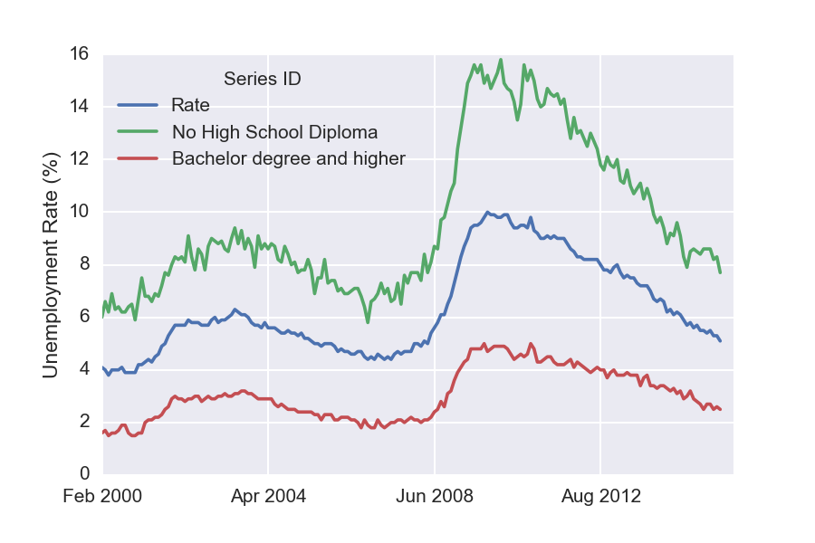
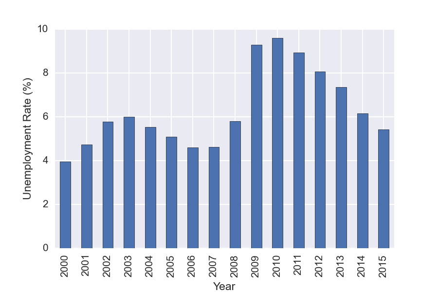

We have made use of Python's Pandas package in a variety of posts on the site. These have showcased some of Pandas' abilities including the following:
- DataFrames for data manipulation with built in indexing
- Handling of missing data
- Data alignment
- Melting/stacking and Pivoting/unstacking data sets
- Groupby feature allowing split -> apply -> combine operations on data sets
- Data merging and joining
Pandas is also a high performance library, with much of its code written in Cython or C. Unfortunately, Pandas can have a bit of a steep learning curve -- In this post, I'll cover some introductory tips and tricks to help one get started with this excellent package.
Notes:
- This post was partially inspired by Tom Augspurger's Pandas tutorial, which has a youtube video that can be viewed along side it. We also suggest some other excellent resource materials -- where relevant -- below.
- The notebook we use below can be downloaded from our github page. Feel free to grab it and follow along.
Follow @efavdb
Follow us on twitter for new submission alerts!
Jupyter (Formally IPython) notebook tips
All the exercises I will be referring to here were carried out using IPython notebooks. To start off, here's a few quick tips on notebook navigation that can help make life easier: First, the notebook has two modes, command and edit. If you are in edit mode you have the cursor in one of the cells (boxes) where you can enter code or text. To enter command mode press the Esc key and the cursor will disappear, but the cell will still be highlighted. In command mode you have a variety of keyboard shortcuts, and you can see all of them if you press h. a and b will make new empty cells below and above the current cell. j / k will navigate through the notebook. Shift + Enter will execute the current cell and move to the next one, while Ctrl + Enter will execute the cell but does not move to the next cell. This is nice if you are still tweaking the code in that cell.
Pandas is built on top of NumPy
To understand Pandas, you gotta understand NumPy, as Pandas is built on top of it. Here, we cover some of its NumPy's basic properties.
Ndarray: ndarrays are central to NumPy, and are homogeneous N-dimensional arrays of fixed-size. NumPy also provides fast methods for the ndarrary that are written in C, often making use of vectorized operations such as element wise addition and multiplication. These methods provide a major resource for code speedup, and Pandas takes full advantage of them where possible. In addition to the fast methods, ndarray also requires less memory than a python list because python lists are an array of pointers to Python objects -- this is what allows lists to hold mixed data types. This overhead combined with the overhead of the Python objects vs a numpy object can add up quickly. The variabilities in data type also makes it difficult to implement efficient C-loops because every iteration would need to make a call to Python to check the data type. This leads us to the next point.
Data types: As mentioned earlier, unlike Python's list object, NumPy arrays can only contain one data type at a time. Giving up mixed data types allows us to achieve much better performance through efficient C-loops. One important thing to note is that missing values (NaN) will cast integer or boolean arrays to floats.
[caption id="" align="aligncenter" width="526"] Graph showing data types in NumPy[/caption]
Graph showing data types in NumPy[/caption]
Broadcasting: Broadcasting describes how NumPy treats arrays with different shapes. Essentially the smaller array is “broadcast” across the larger array so that they have compatible shapes. This makes it possible to have vectorized array operations, enabling the use of C instead of Python for the looping. Broadcasting also prevents needless copies of data from being created by making a new array with repeating copies. The simplest broadcasting example occurs when combining an array with a scaler. This is something Pandas uses for efficiency and ease of use.
a = np.array([1.0, 2.0, 3.0])
b = 2.0
a * b
>>> array([ 2., 4., 6.])
When operating on two arrays, their shapes are compared starting with the trailing dimensions. Two dimensions are compatible when:
- they are equal, or
- one of them is 1
a (3d array): 15 x 3 x 5
b (2d array): 3 x 1
a*b (3d array): 15 x 3 x 5
For those interested, I recommend Jake Vanderplas's talk for learning more about how one can reduce loop usage in your own code using NumPy.
Pandas Data Structures
Series
We now move to the Pandas-specific data types. First up are Series, which are one-dimensional labeled arrays. Unlike ndarrays, these are capable of holding mixed data types. The cells of the series are labeled via the series Index. We will discuss indices more in a bit. The general method of creating a series is as follows.
s = Series(data, index=index)
pd.Series([1,2,3,4], index=['a', 'b', 'c', 'd'])
>>>
a 1
b 2
c 3
d 4
dtype: int64
DataFrame
As we have seen in other posts on the site, the DataFrame is the main attraction for Pandas. It is a 2-dimensional labeled data structure with columns of potentially different types. You can think of it like a spreadsheet or SQL table, or a dict of Series objects. Like Series, DataFrame accepts many different kinds of input. One way of making a DataFrame is using a dictionary as input.
d = {'one' : [1., 2., 3., 4.],
'two' : [4., 3., 2., 1.],
'good' :[True, False, False, True]}
df = pd.DataFrame(d, index=['a', 'b', 'c', 'd'])
Running the code in a notebook will output a nicely formatted table.
good
one
two
a
True
1
4
b
False
2
3
c
False
3
2
d
True
4
1
Index
The index in Pandas provides axis labeling information for pandas objects -- it can serve many purposes. First, an index can provide metadata, potentially important for analysis, visualization, and so on. Second, it can enable automatic data alignment when preforming operations on multiple DataFrames or Series. Third, it can allow easy access to subsets of the data.
Selection
A huge improvement over numpy arrays is labeled indexing. We can select subsets by column, row, or both. To select columns use [].
df['good']
>>>
a True
b False
c False
d True
Name: good, dtype: bool
As we can see here, Pandas will reduce dimensions when possible which is why the output above is a Series instead of a DataFrame -- if you wish to force the returned result to be a DataFrame, you must supply a list of arguments, eg df[['good']]. You can also select individual columns with the dot (.) operator, for example df.good will give the same result. However, when using this approach, the column name selected must not have any spaces or special characters, nor can it conflict with any DataFrame methods. In order to add a column to a DataFrame, we write,
df['A'] = [1, 2, 3]
You can also select multiple columns using a column name list.
df[['good', 'two']]
good
two
a
True
4
b
False
3
c
False
2
d
True
1
For row selection, use .loc[row_lables, column_labels] for label-based indexing and use .iloc[row_positions, column_positions] for ordinal/positional selection.
df.loc[['a', 'd']]
good
one
two
a
True
1
4
d
True
4
1
df.loc['a':'b']
good
one
two
a
True
1
4
b
False
2
3
Notice that the slice is inclusive: It includes both the start and end index -- unlike normal python indexing.
df.iloc[0:2]
good
one
two
a
True
1
4
b
False
2
3
df.loc['b', 'good']
>>> False
Reading files into Pandas
At this point, we require a larger data set in order to demonstrate other Pandas capabilities. For that purpose, I decided to use unemployment data from (http://data.bls.gov/). The data file is available in our Github repository along with the notebook that generated the examples above. I saved the data as a csv file. To read into the notebook, we'll make use of Pandas' read_csv method -- a fast, simple method for directly reading csv files into a DataFrame.
After reading in the data, we see that each row corresponds to one unemployment measurement with a different column for each time point. The first column has a numeric id, so the first thing to do is to replace those with human readable strings. Next, we see that we have incomplete data for Jan 2000, so we drop that column. Setting the inplace flag to true here causes the modified DataFrame to replace the original -- in this way, we avoid having to copy the original.
Next, we assign our IDs to the DataFrame index using set_index, and then drop the column since it is no longer needed. Lastly we transpose the table so that each row corresponds to a different time point and the columns to the separate measures.
df = pd.read_csv('data.csv')
df['Series ID']= ['Labor force', 'Participation rate',
'Rate', 'Rate - 16-19 yrs','Rate - 20+ yrs (Men)',
'Rate - 20+ yrs (Women)','Rate - White',
'Rate - Black or African American','Rate - Asian',
'Rate - Hispanic or Latino','No High School Diploma',
'High School Graduates','Some College or Associate Degree',
'Bachelor degree and higher','Under 5 Weeks',
'5-14 Weeks', '15 Weeks & over', '27 Weeks & over']
df.drop('Jan 2000', axis=1, inplace=True)
df.set_index(df['Series ID'], inplace=True)
df.drop('Series ID', axis=1, inplace=True)
df = df.transpose().convert_objects(convert_numeric=True)
With these steps, we take the original table:
Series ID
Jan 2000
Feb 2000
Mar 2000
Apr 2000
0
LNS11000000
142267(1)
142456
142434
142751
1
LNS11300000
67.3
67.3
67.3
67.3
2
LNS14000000
4.0
4.1
4.0
3.8
3
LNS14000012
12.7
13.8
13.3
12.6
4
LNS14000025
3.3
3.5
3.2
3.1
to
Series ID
Labor force
Participation rate
Rate
Rate - 16-19 yrs
Rate - 20+ yrs (Men)
Feb 2000
142456
67.3
4.1
13.8
3.5
Mar 2000
142434
67.3
4.0
13.3
3.2
Apr 2000
142751
67.3
3.8
12.6
3.1
May 2000
142388
67.1
4.0
12.8
3.3
Jun 2000
142591
67.1
4.0
12.3
3.2
Working with the data
Now that we have the data in a nicely formatted within DataFrame, we can easily visualize it using the Pandas plot method. For example, to plot the general unemployment rate, we write
df['Rate'].plot()
plt.ylabel('Unemployment Rate (%)')
 Similarly, the following plots unemployment for each of the available different levels of education.
{kind=link}
df[['Rate', 'No High School Diploma', 'Bachelor degree and higher']].plot()
plt.ylabel('Unemployment Rate (%)')

Interestingly, these unemployment rates seem to evolve in a similar manner. Notice that both the green and the red curves seem to have doubled during the recent slow-down.
{kind=link}
GroupBy
You can also used Pandas GroupBy functionality to do analysis on subsets of the data. For this example we GroupBy year, and then make a plot showing the mean unemployment per year. GroupBy allows one to easily split the data, apply a function to each group, and then combine the results. It is a very useful feature!
df['Year']=(df.index.to_datetime()).year
years = df.groupby('Year')
years['Rate'].mean().plot(kind='bar')

{kind=link}
There are some functions like mean, and describe that can be run directly on a grouped object.
years.get_group(2005)['Rate'].describe()
>>>
count 12.000000
mean 5.083333
std 0.158592
min 4.900000
25% 5.000000
50% 5.000000
75% 5.200000
max 5.400000
Name: Rate, dtype: float64
It is possible to apply any function to the grouped function using agg().
years['Rate'].agg([np.mean, np.std, max, min])
mean
std
max
min
Year
2000
3.963636
0.092442
4.1
3.8
2001
4.741667
0.528219
5.7
4.2
2002
5.783333
0.102986
6.0
5.7
2003
5.991667
0.178164
6.3
5.7
2004
5.541667
0.131137
5.8
5.4
2005
5.083333
0.158592
5.4
4.9
2006
4.608333
0.131137
4.8
4.4
2007
4.616667
0.164225
5.0
4.4
2008
5.800000
0.780443
7.3
4.9
2009
9.283333
0.696528
10.0
7.8
2010
9.608333
0.219331
9.9
9.3
2011
8.941667
0.206522
9.2
8.5
2012
8.066667
0.214617
8.3
7.7
2013
7.366667
0.342008
8.0
6.7
2014
6.150000
0.360555
6.7
5.6
2015
5.412500
0.180772
5.7
5.1
Boolean Indexing
Another common operation is the use of boolean vectors to filter data. This allows one to easily select subsets of data. It also provides a quick method for counting -- this works because True and False are represented as 1 and 0, respectively, when adding.
sum(df['Rate'] > 7)
>>> 59
String Methods
Pandas has very useful string methods which can be access via str. This makes it easy to look for patterns in the text, do filtering, replacements, and so on. I have a couple of examples below but I highly recommend taking a look at the documentation page for many examples.
s = pd.Series(['Dog', 'Bat', 'Coon', 'cAke', 'bAnk', 'CABA', 'dog', 'cat'])
s[s.str.contains('B')]
1 Bat
5 CABA
s.str.replace('dog|cat', 'nope ', case=False)
0 nope
1 Bat
2 Coon
3 cAke
4 bAnk
5 CABA
6 nope
7 nope
Wrap Up
Pandas is a very useful library that I highly recommend. Although it can have a bit of a steep learning curve, it's actually pretty easy to pick up once you get started. Give it a shot, and you won't regret it!